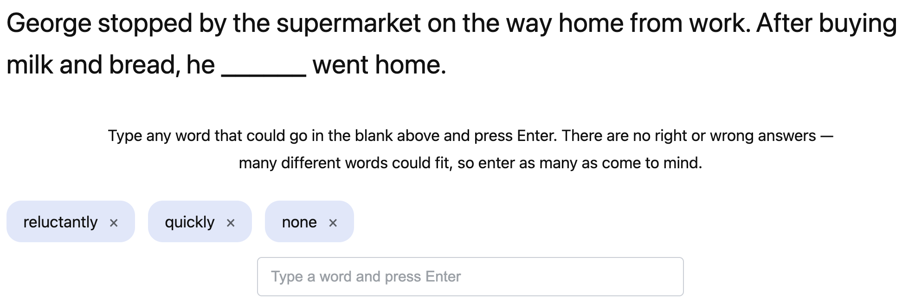

<!DOCTYPE html>
<html>

<head>
    <title>Modifier Fill-in Experiment</title>
    <meta charset="utf-8">
    <meta http-equiv="pragma" content="no-cache">
    <link rel="icon" href="data:;base64,iVBORw0KGgo=">
    <link href="https://unpkg.com/jspsych@7.3.1/css/jspsych.css" rel="stylesheet" type="text/css" />
    <script src="https://unpkg.com/jspsych@7.3.1"></script>
    <script src="https://unpkg.com/@jspsych/plugin-html-button-response@1.1.2"></script>
    <script src="https://unpkg.com/@jspsych/plugin-survey-html-form@1.0.3"></script>
    <script src="firebase-config.js"></script>
    <script src="stimuli.js"></script>
    <link href="styles.css" rel="stylesheet" type="text/css" />
</head>

<body></body>

<script type="module">
    import { initializeApp } from "https://www.gstatic.com/firebasejs/10.12.0/firebase-app.js";
    import { getAuth, signInAnonymously } from "https://www.gstatic.com/firebasejs/10.12.0/firebase-auth.js";
    import { getFirestore, doc, setDoc, arrayUnion, serverTimestamp } from "https://www.gstatic.com/firebasejs/10.12.0/firebase-firestore.js";

    var jsPsych = initJsPsych({
        show_progress_bar: true,
        auto_update_progress_bar: true
    });

    // subject id, from URL param if present (e.g. Prolific), otherwise random
    var subject_id = jsPsych.data.getURLVariable('PROLIFIC_PID');
    if (!subject_id) {
        subject_id = jsPsych.randomization.randomID(10);
    }
    jsPsych.data.addProperties({ subject_id: subject_id });

    // firebaseConfig comes from firebase-config.js (loaded above). Also make
    // sure Firestore is created and Anonymous auth is enabled in the Firebase
    // console (Authentication > Sign-in method).
    var firebaseApp = initializeApp(firebaseConfig);
    // Using a named database (not the "(default)" one) -- it must already
    // exist in the Firebase console (Firestore Database > add database)
    // before this will work.
    var db = getFirestore(firebaseApp, 'cross-cultural-politeness');
    var auth = getAuth(firebaseApp);

    // Sign in anonymously so Firestore's security rules can require auth
    // without participants ever seeing a login screen. save_data_to_firestore
    // waits on this promise before writing.
    var firebase_ready = signInAnonymously(auth).then(function (cred) {
        console.log('Firebase anonymous sign-in succeeded, uid:', cred.user.uid);
    }).catch(function (err) {
        console.error('Firebase anonymous sign-in failed:', err);
    });

    var instructions = {
        type: jsPsychHtmlButtonResponse,
        stimulus:
            '<p class="stimulus">In this study, you will read short scenarios. ' +
            'Each one contains a blank, marked [ ___ ], for you to fill in with a word or phrase of your choosing.</p>' +
            '<p class="stimulus">Please read the scenario carefully and type words or phrases that would ' +
            'naturally fill the blank, given the situation described. ' +
            'After typing each option, press Enter to add it as its own tag &mdash; ' +
            'you can add as few or as many as you like.</p>' +
            '<p class="stimulus">If you think the sentence works fine without anything in the blank, please enter "none".</p>',
        choices: ['Next'],
        margin_vertical: '20px'
    };

    var example_screenshot = {
        type: jsPsychHtmlButtonResponse,
        stimulus:
            '' +
            '<p class="stimulus">You will first see one practice example, then move on to the 24 scenarios ' +
            'in the main study. There are no right or wrong answers &mdash; we are interested in your intuitive judgment.</p>',
        choices: ['Next'],
        margin_vertical: '20px'
    };

    // The short hint shown above the input box on every practice/main trial.
    // The fuller explanation (including the "none" option) only appears once,
    // on the instructions page above.
    var TRIAL_HINT = 'Type any word that could go in the blank above and press Enter. ' +
        'There are no right or wrong answers &mdash; many different words could fit, so enter as many as come to mind.';

    // Builds a single fill-in-the-blank trial. Used for both the practice
    // examples and the main stimuli, so the tag input / feedback / IME
    // handling logic lives in exactly one place.
    function make_trial(s, options) {
        options = options || {};
        var sentence_with_blank = s.text.replace('[modifier]', '<span class="blank">[ ___ ]</span>');
        var collected_tags = (options.initialTags || []).slice();
        var feedback_text = '';
        var includeFeedback = options.includeFeedback !== false;

        var trial_html =
            (options.exampleLabel ? '<p class="example-label">' + options.exampleLabel + '</p>' : '') +
            '<p class="stimulus">' + sentence_with_blank + '</p>' +
            '<p class="context-note">' + TRIAL_HINT + '</p>' +
            '<div id="tag-container" class="tag-container"></div>' +
            '<input type="text" id="tag-input" class="tag-input" placeholder="Type an option and press Enter" autocomplete="off">' +
            (includeFeedback ?
                '<p class="feedback-label">(Optional) Any feedback about this scenario?</p>' +
                '<textarea id="feedback-box" class="feedback-box" rows="3" placeholder="Comments (optional)"></textarea>'
                : '');

        return {
            type: jsPsychHtmlButtonResponse,
            stimulus: trial_html,
            choices: [options.buttonLabel || 'Continue'],
            data: {
                predicate: s.predicate,
                attitude: s.attitude,
                relationship: s.relationship,
                sentence: s.text,
                is_practice: !!options.isPractice
            },
            on_load: function () {
                var input = document.getElementById('tag-input');
                var container = document.getElementById('tag-container');
                var feedback_box = includeFeedback ? document.getElementById('feedback-box') : null;
                var continue_btn = document.querySelector('.jspsych-btn');
                continue_btn.disabled = collected_tags.length === 0;
                input.focus();

                // The trial's HTML is wiped from the page as soon as the response
                // is recorded, before on_finish runs. So we track the feedback text
                // live (on every keystroke) instead of reading the DOM at the end.
                if (feedback_box) {
                    feedback_box.addEventListener('input', function () {
                        feedback_text = feedback_box.value;
                    });
                }

                function render_tags() {
                    container.innerHTML = '';
                    collected_tags.forEach(function (tag, idx) {
                        var tag_el = document.createElement('span');
                        tag_el.className = 'tag-label';
                        tag_el.textContent = tag;

                        var remove_el = document.createElement('span');
                        remove_el.className = 'tag-remove';
                        remove_el.textContent = '×';
                        remove_el.addEventListener('click', function () {
                            collected_tags.splice(idx, 1);
                            render_tags();
                            continue_btn.disabled = collected_tags.length === 0;
                        });

                        tag_el.appendChild(remove_el);
                        container.appendChild(tag_el);
                    });
                }
                render_tags();

                input.addEventListener('keydown', function (e) {
                    // Ignore Enter presses that are part of IME composition
                    // (relevant if the browser's input method uses it), not an actual submit.
                    if (e.isComposing || e.keyCode === 229) {
                        return;
                    }
                    if (e.key === 'Enter') {
                        e.preventDefault();
                        var val = input.value.trim();
                        if (val.length > 0) {
                            collected_tags.push(val);
                            input.value = '';
                            render_tags();
                            continue_btn.disabled = false;
                        }
                    }
                });
            },
            on_finish: function (data) {
                data.modifier_response = collected_tags.join('; ');
                data.modifier_response_list = collected_tags.slice();
                if (includeFeedback) {
                    data.trial_feedback = feedback_text.trim();
                }
                save_trial_to_firestore(data);
            }
        };
    }

    // The screenshot example now lives on the instructions page itself, so
    // this is the only (interactive) practice trial participants complete
    // before the main study.
    var practice_example = make_trial(
        { predicate: '', attitude: '', relationship: '', text: 'George had meetings all morning and [modifier] had no time for lunch.' },
        {
            exampleLabel: 'Practice Example',
            includeFeedback: false,
            isPractice: true,
            buttonLabel: 'Next'
        }
    );

    var ready_screen = {
        type: jsPsychHtmlButtonResponse,
        stimulus: '<p class="stimulus">Now, you are about to start the experiment. Please press continue when you are ready to start.</p>',
        choices: ['Continue'],
        margin_vertical: '20px'
    };

    // stimuliPool (from stimuli.js) contains every predicate x attitude x relationship
    // combination. Each participant sees exactly one scenario for every
    // (relationship, attitude) pair, with the predicate for each pair chosen at
    // random. (Currently: 6 predicates x 6 attitudes x 4 relationships = 144 in the
    // pool, 4 x 6 = 24 scenarios shown per participant.)
    var relationships = Array.from(new Set(stimuliPool.map(function (s) { return s.relationship; })));
    var attitudes = Array.from(new Set(stimuliPool.map(function (s) { return s.attitude; })));
    var predicates = Array.from(new Set(stimuliPool.map(function (s) { return s.predicate; })));

    var poolIndex = {};
    stimuliPool.forEach(function (s) {
        var key = s.relationship + '|' + s.attitude + '|' + s.predicate;
        poolIndex[key] = s;
    });

    var selected_stimuli = [];
    relationships.forEach(function (rel) {
        attitudes.forEach(function (att) {
            var pred = predicates[Math.floor(Math.random() * predicates.length)];
            var key = rel + '|' + att + '|' + pred;
            var s = poolIndex[key];
            if (s) {
                selected_stimuli.push(s);
            } else {
                console.warn('Missing stimulus for', key);
            }
        });
    });

    // Arrange trials so no two adjacent ones share a predicate or an attitude.
    // A pure random-shuffle-and-retry approach isn't reliable here (it can fail
    // to find a valid order within a reasonable number of tries), so instead we
    // greedily place whichever remaining item is currently the most "constrained"
    // (i.e. belongs to the predicate/attitude with the most items left to place),
    // with backtracking as a fallback if a dead end is ever reached.
    function arrangeAvoidingAdjacentRepeats(items, nodeLimit) {
        var remaining = items.slice();
        var result = [];
        var nodes = 0;

        function countRemaining(value, field) {
            var c = 0;
            for (var i = 0; i < remaining.length; i++) {
                if (remaining[i][field] === value) c++;
            }
            return c;
        }

        function backtrack() {
            nodes++;
            if (nodes > nodeLimit) return false;
            if (remaining.length === 0) return true;

            var last = result[result.length - 1];
            var candidates = [];
            for (var i = 0; i < remaining.length; i++) {
                var item = remaining[i];
                if (last && (item.predicate === last.predicate || item.attitude === last.attitude)) {
                    continue;
                }
                var score = countRemaining(item.predicate, 'predicate') + countRemaining(item.attitude, 'attitude');
                candidates.push({ idx: i, score: score, rand: Math.random() });
            }
            // Most-constrained-first (highest remaining count), random tiebreak.
            candidates.sort(function (a, b) {
                return (b.score - a.score) || (b.rand - a.rand);
            });

            for (var k = 0; k < candidates.length; k++) {
                var idx = candidates[k].idx;
                var candidate = remaining[idx];
                result.push(candidate);
                remaining.splice(idx, 1);
                if (backtrack()) return true;
                remaining.splice(idx, 0, candidate);
                result.pop();
            }
            return false;
        }

        var success = backtrack();
        if (!success) {
            console.warn('Could not find an order with no adjacent predicate/attitude repeats; showing best partial attempt.');
        }
        return result;
    }

    var shuffled_stimuli = arrangeAvoidingAdjacentRepeats(selected_stimuli, 200000);

    console.log('shuffled_stimuli count:', shuffled_stimuli.length);
    console.log('shuffled_stimuli:', shuffled_stimuli);

    var trials = shuffled_stimuli.map(function (s) {
        return make_trial(s, { includeFeedback: true, isPractice: false });
    });

    // One document per participant, keyed by subject_id, instead of one
    // document per trial. Every trial's on_finish (above) still saves
    // immediately as it happens -- appending to the "trials" array field on
    // this single document via arrayUnion -- so a participant who drops out
    // partway through still has whatever they've answered so far saved, but
    // all of it lives in one place instead of being scattered across many
    // documents.
    var participantDocRef = doc(db, 'responses', subject_id);

    function save_trial_to_firestore(trial_data) {
        // Logs exactly what is about to be written, so you can confirm fields
        // like trial_feedback are present and populated at write time --
        // independently of whether the write itself then succeeds.
        console.log('Saving trial -> trial_feedback:', JSON.stringify(trial_data.trial_feedback),
            '| full payload:', trial_data);
        return firebase_ready.then(function () {
            return setDoc(participantDocRef, {
                subject_id: subject_id,
                trials: arrayUnion(trial_data),
                updated_at: serverTimestamp()
            }, { merge: true });
        }).then(function () {
            console.log('Trial saved to Firestore for participant', subject_id);
        }).catch(function (err) {
            console.error('Firestore save failed for this trial.', err);
        });
    }

    // ---- Prolific completion redirect ----
    // Paste the completion code from your Prolific study between the quotes
    // below. Once set, participants are automatically sent back to Prolific
    // after finishing (no need for them to copy/paste a code themselves).
    // Leave it empty to skip the redirect (e.g. while testing locally).
    // This is the ONLY line you need to edit -- nothing else compares against
    // this value, so there's no second copy to keep in sync.
    var PROLIFIC_COMPLETION_CODE = 'CF6WQT0C';

    // Logged at page load so you can confirm what the browser actually loaded.
    // If this prints "(none)" but your file does have a code, you're viewing a
    // cached copy of index.html (hard-refresh with Cmd+Shift+R), or you edited
    // a different copy of the file than the one being served. If this prints
    // your code but the redirect below still says "no code set", then this
    // constant is being declared a second time further down the file and
    // overwritten -- it must only ever be declared once.
    console.log('Prolific completion code loaded:', PROLIFIC_COMPLETION_CODE || '(none)');

    // Sends the participant back to Prolific, but only once. Called both when
    // the final save settles and (as a fallback) after a short timeout, so a
    // slow or failed Firestore write can never leave someone stranded on the
    // last page unable to get credit for the study.
    var already_redirected = false;
    function redirect_to_prolific_once() {
        if (already_redirected) return;
        already_redirected = true;
        if (!PROLIFIC_COMPLETION_CODE) {
            console.log('No Prolific completion code set; skipping redirect. Value seen:',
                JSON.stringify(PROLIFIC_COMPLETION_CODE));
            return;
        }
        window.location.href = 'https://app.prolific.com/submissions/complete?cc=' + PROLIFIC_COMPLETION_CODE;
    }

    var debrief = {
        type: jsPsychSurveyHtmlForm,
        html: '<p>Thank you very much for your participation!<br><br>' +
            'Please let us know if you have any other comments.</p>' +
            '<textarea name="comments" rows="5" cols="50"></textarea>',
        button_label: 'Finish',
        on_finish: function (data) {
            var comments = data.response ? data.response.comments : '';
            // Fallback: redirect anyway if the save is still pending after 3s.
            setTimeout(redirect_to_prolific_once, 3000);
            firebase_ready.then(function () {
                return setDoc(participantDocRef, {
                    subject_id: subject_id,
                    comments: comments,
                    completed_at: serverTimestamp()
                }, { merge: true });
            }).then(function () {
                console.log('Debrief comments saved to Firestore for participant', subject_id);
            }).catch(function (err) {
                console.error('Firestore save failed for debrief comments.', err);
            }).finally(redirect_to_prolific_once);
        }
    };

    var timeline = [instructions, example_screenshot, practice_example, ready_screen].concat(trials, [debrief]);

    jsPsych.run(timeline);
</script>

</html>
